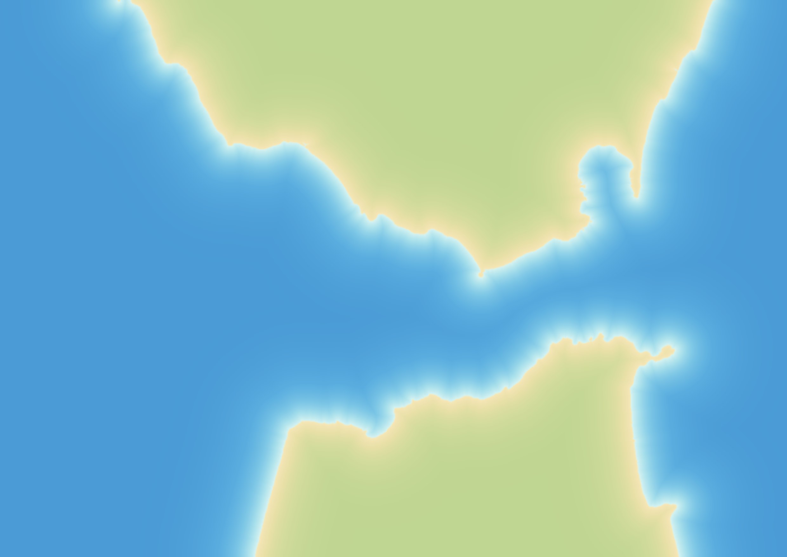
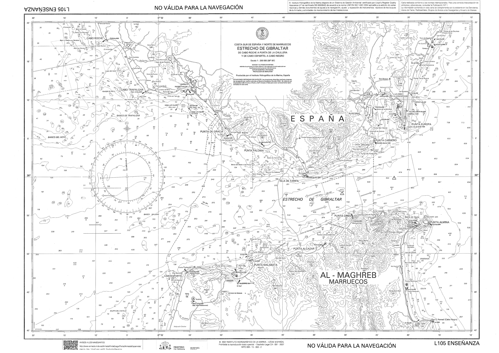

Este (E) suma y abre a la derecha. Oeste (W) resta y abre a la izquierda. Esquema sin escala.
En la carta se traza siempre el verdadero. Lo de aguja se convierte antes de trazar; lo medido en la carta, antes de dárselo al timonel.
La Ct elegida se aplica a todo lo que escribas como Ra o Da y al barco.
Si entra por estribor abate a babor (−); por babor, a estribor (+). Rs = Rv + abatimiento.
Rc es hacia dónde va el agua. La verás fluir sobre la mar.

